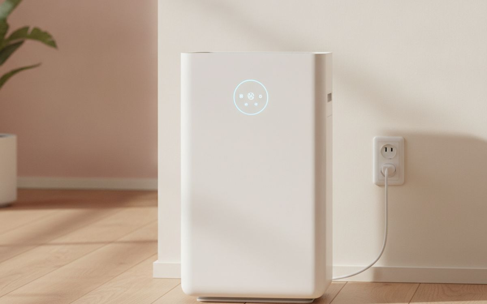
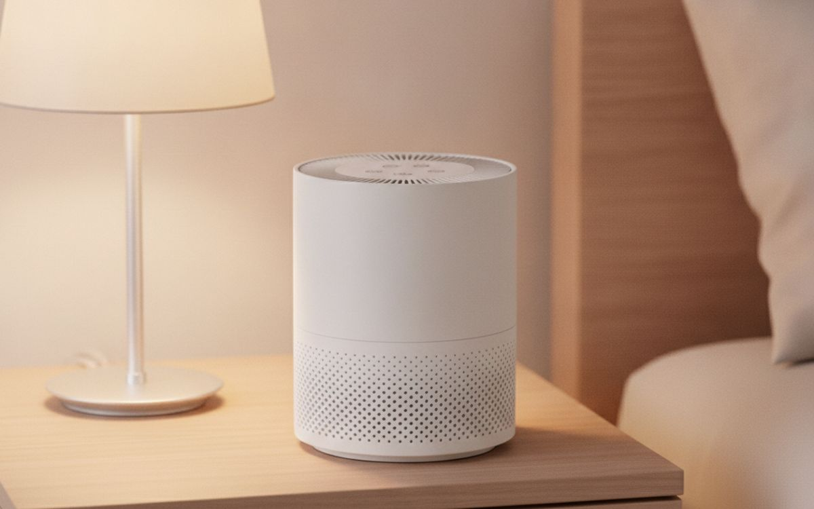
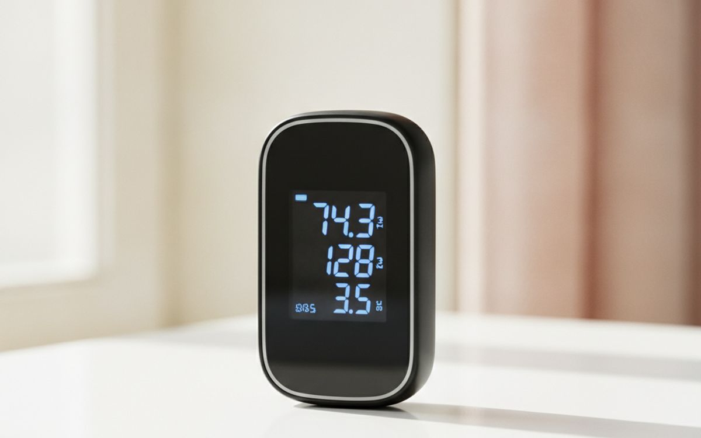
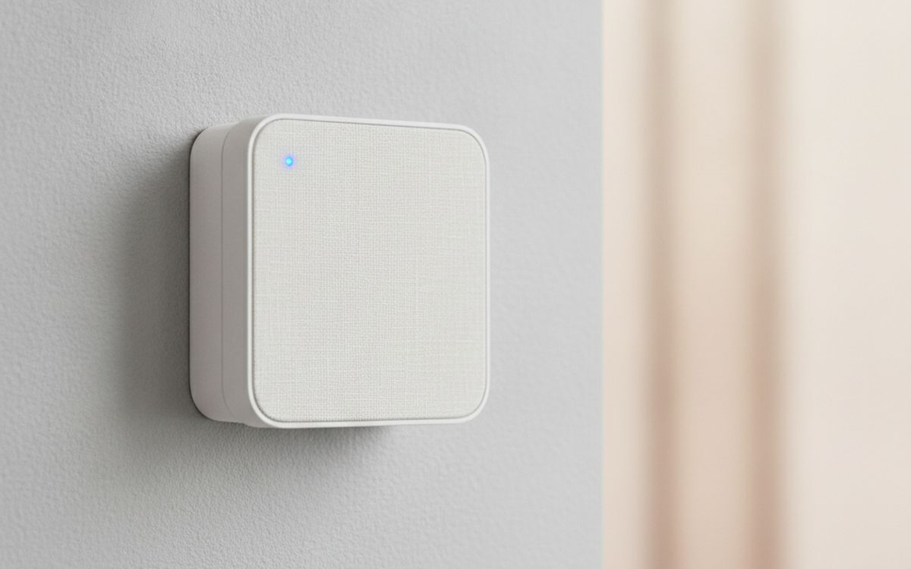
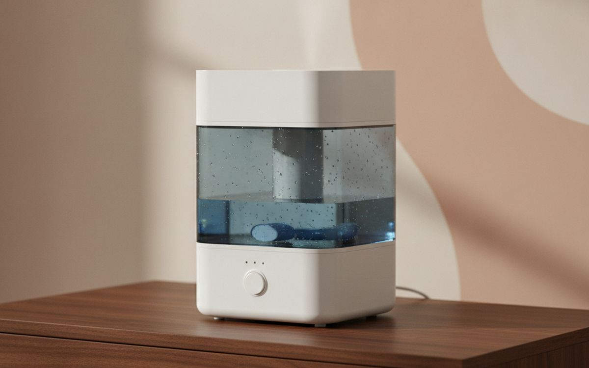
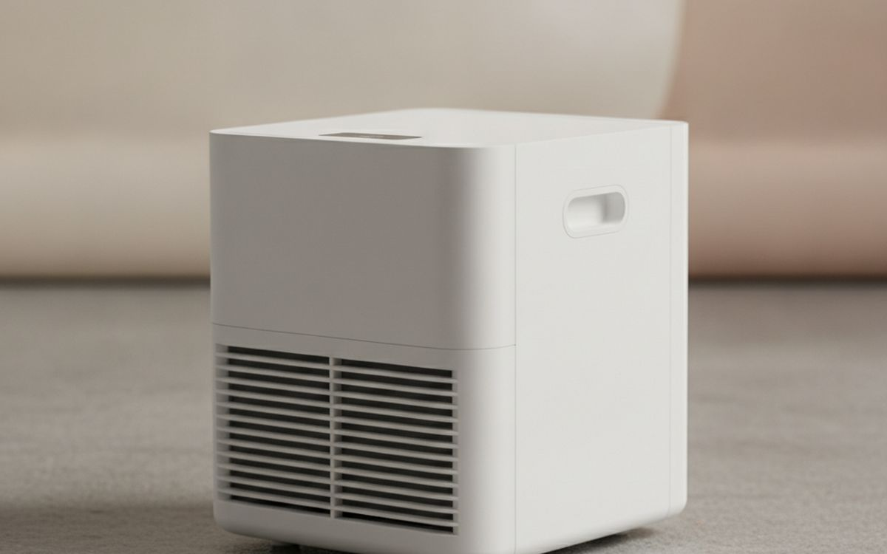
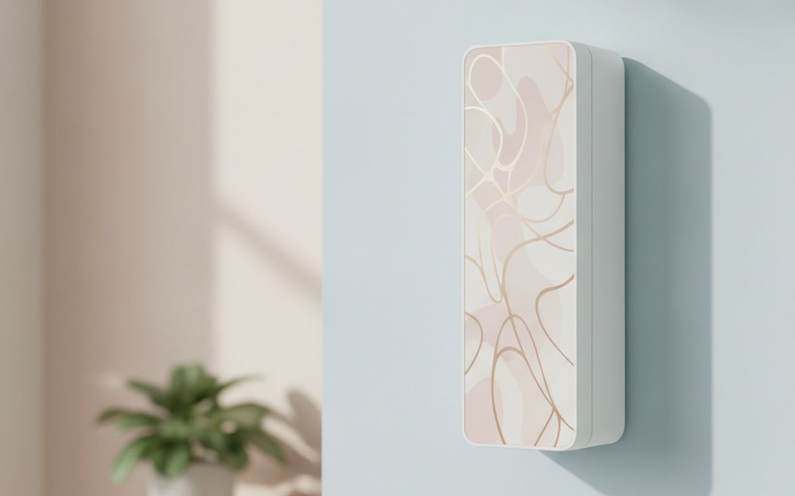
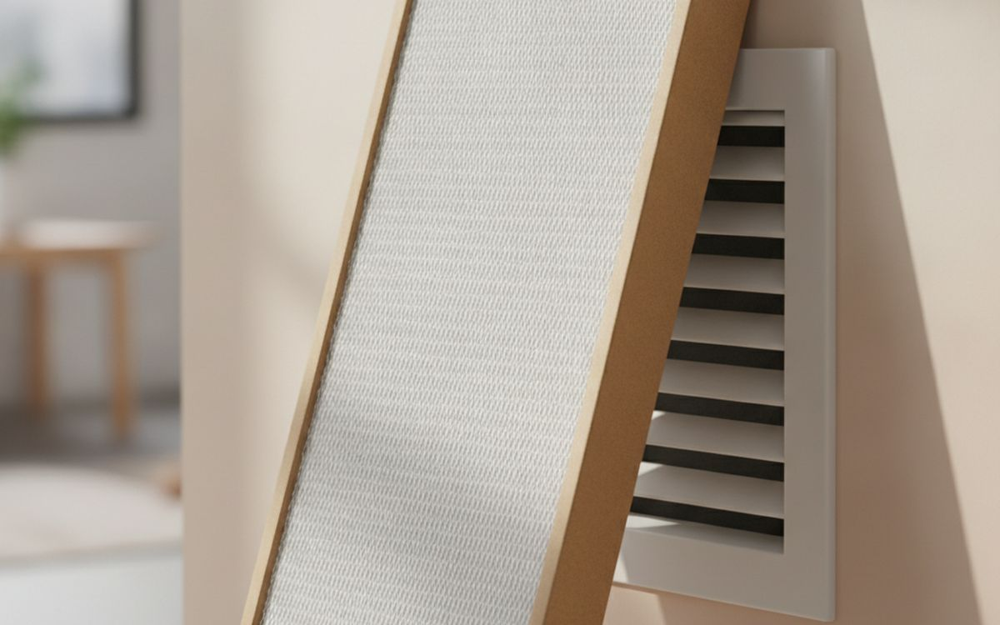
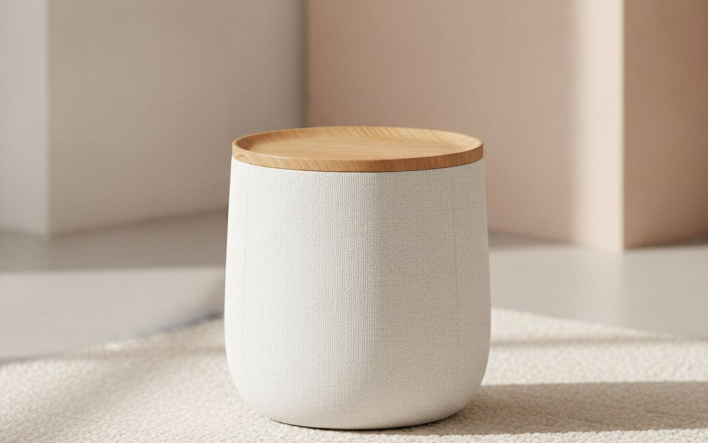

La calidad del aire interior es un tema complicado. No puedes ver la mayoría de las partículas, gases o niveles de humedad que la afectan. Esto facilita que los vendedores te vendan cosas que hacen poco. Muchos productos prometen aire más limpio pero carecen de la tecnología fundamental o la potencia para marcar una diferencia real en un hogar típico. Sé escéptico con las afirmaciones vagas y céntrate en mejoras medibles.
Los aparatos más útiles abordan problemas específicos. Los purificadores de aire con filtros HEPA eliminan partículas como polvo, polen y caspa de mascotas. Los humidificadores añaden humedad al aire demasiado seco, lo que puede ayudar al confort. Los deshumidificadores eliminan el exceso de humedad, crucial para prevenir moho. Los monitores de calidad del aire te dan datos, para que sepas con qué te enfrentas realmente antes de comprar nada.
En resumen
Coway Airmega 200M
Tu primer purificador de aire
Aviso. Los enlaces de esta página son de afiliados. Si compras a través de uno podemos ganar una comisión sin coste adicional para ti. No influye en qué entra en esta lista ni en su orden.
Cómo lo elegimos
Seleccionamos productos basándonos en su tecnología subyacente, eficacia demostrada y datos de rendimiento ampliamente disponibles. Damos prioridad a los aparatos que abordan problemas comunes de calidad del aire interior con métodos probados. Esta guía se basa en el conocimiento público y principios de ingeniería, no en reseñas de productos probados en mano. No hemos probado estos productos nosotros mismos, ni afirmamos haberlo hecho. Nos centramos en lo que se sabe sobre cómo funcionan estas categorías.
De un vistazo
Los precios son aproximados en el momento de escribir y cambian a menudo.
Las recomendaciones

01 · Tu primer purificador de aireCoway Airmega 200M
Este purificador es una opción sólida para la mayoría de las habitaciones de hasta unos 33 metros cuadrados. Utiliza un filtro HEPA verdadero para capturar el 99.97% de las partículas de 0.3 micrones o más grandes. Esto incluye polen, polvo y caspa de mascotas. También tiene un filtro de carbón activado para olores. El ventilador tiene varias velocidades, siendo la más baja muy silenciosa. No resolverá todos los problemas del aire, pero maneja eficazmente las partículas en suspensión, que es la principal preocupación para la mayoría de las personas. Busca su índice CADR para entender su velocidad real de limpieza de partículas.
$180-250Lo que aceptas: Los filtros de repuesto son propietarios y costosos
Por qué está aquí
- Eficaz para eliminar partículas comunes
- Silencioso a bajas velocidades del ventilador
- Los filtros duran mucho tiempo
Conviene saber
- Los filtros de repuesto son propietarios y costosos
- Ocupa un espacio notable en el suelo

02 · Buen aire, menos dineroLevoit Core 300S
Para habitaciones más pequeñas o si necesitas varios purificadores, el Levoit Core 300S es una opción más económica. También utiliza un filtro HEPA verdadero y una capa de carbón activado, dirigidos a partículas y algunos olores. Su tamaño más pequeño significa un índice CADR más bajo, por lo que es más adecuado para dormitorios u oficinas pequeñas, de unos 20 metros cuadrados. Es más silencioso que las unidades más grandes y su diseño compacto facilita su colocación. Es una opción práctica si el Coway es demasiado grande o demasiado caro para tus necesidades, pero no esperes que limpie eficazmente una sala de estar grande y diáfana.
$90-120Lo que aceptas: Índice CADR más bajo, menos eficaz en habitaciones grandes
Por qué está aquí
- Compacto y fácil de colocar
- Los filtros son relativamente asequibles
- Silencioso para su tamaño
Conviene saber
- Índice CADR más bajo, menos eficaz en habitaciones grandes
- Eliminación de olores limitada en comparación con unidades especializadas

03 · Ve lo que respirasTemtop M10
Un monitor de calidad del aire te da datos, lo cual es más útil que adivinar. El Temtop M10 mide PM2.5 (partículas finas) y COVs (compuestos orgánicos volátiles). Es un dispositivo portátil, útil para revisar diferentes habitaciones o identificar fuentes de contaminación. Si bien sus lecturas de COVs son a menudo indicativas más que precisas de laboratorio, pueden mostrarte tendencias o picos, como después de cocinar o usar productos de limpieza. Conocer tus niveles de PM2.5 te ayuda a entender si tu purificador de aire está haciendo su trabajo o si el aire exterior te está afectando. Es una herramienta para entender, no una solución en sí misma.
$60-90Lo que aceptas: El sensor de COVs es para tendencias, no para mediciones precisas
Por qué está aquí
- Mide PM2.5 y COVs
- Portátil y fácil de usar
- Proporciona datos accionables
Conviene saber
- El sensor de COVs es para tendencias, no para mediciones precisas
- Necesita carga regular para uso continuo

04 · Conoce tu hogar completoAirthings View Plus
Para una monitorización completa y continua, el Airthings View Plus rastrea múltiples contaminantes más allá de solo PM2.5 y COVs. Incluye dióxido de carbono (CO2), humedad, temperatura y, crucialmente, radón. El radón es un gas radiactivo natural que puede acumularse en los hogares y es un riesgo grave para la salud. A diferencia de un dispositivo de comprobación puntual, este monitor proporciona datos continuos, lo que te permite ver patrones y promedios a largo plazo. Se conecta a una aplicación para datos históricos y alertas. El sensor de radón necesita tiempo para establecer una línea base precisa, a menudo semanas, por lo que se requiere paciencia. Es una inversión para entender el perfil del aire de tu hogar.
$250-300Lo que aceptas: Alto costo inicial en comparación con monitores básicos
Por qué está aquí
- Rastrea múltiples contaminantes, incluyendo radón y CO2
- Proporciona datos continuos y alertas
- Batería de larga duración para un dispositivo inteligente
Conviene saber
- Alto costo inicial en comparación con monitores básicos
- Las lecturas de radón requieren promedios a largo plazo para mayor precisión

05 · Combate el aire seco del inviernoHoneywell HCM-350 Cool Mist Humidifier
Cuando el aire está demasiado seco, especialmente en invierno, un humidificador puede añadir confort. El Honeywell HCM-350 es un humidificador evaporativo, que generalmente se prefiere sobre los modelos ultrasónicos. Los humidificadores evaporativos usan un filtro de mecha para absorber agua y un ventilador para soplar aire a través de él, añadiendo humedad invisible al aire. Este proceso atrapa minerales en el filtro, reduciendo el 'polvo blanco' que los modelos ultrasónicos a menudo producen. También es menos probable que humidifique en exceso una habitación. La limpieza regular y el reemplazo del filtro son esenciales para prevenir el crecimiento de moho y bacterias en el depósito de agua y la mecha.
$60-90Lo que aceptas: Requiere reemplazo regular del filtro
Por qué está aquí
- Reduce el 'polvo blanco' en comparación con los modelos ultrasónicos
- Menos probable que humidifique en exceso
- Funcionamiento relativamente silencioso
Conviene saber
- Requiere reemplazo regular del filtro
- Necesita limpieza frecuente para prevenir moho

06 · Elimina la humedad y el mohoMidea MAD20C1ZWS Dehumidifier
El exceso de humedad puede provocar moho, mildiú y una sensación general de humedad, especialmente en sótanos o climas húmedos. Un deshumidificador elimina activamente la humedad del aire. La serie Cube de Midea es conocida por su rendimiento eficiente y funcionamiento relativamente silencioso para su capacidad. Su diseño único le permite ser más compacto cuando no está en uso. Puede recoger agua en un cubo extraíble o drenar continuamente a través de una manguera, lo cual es esencial si necesitas que funcione durante períodos prolongados sin supervisión. Este aparato es para controlar la humedad, no para purificar el aire, aunque indirectamente puede reducir las esporas de moho.
$180-220Lo que aceptas: Consume una cantidad significativa de electricidad
Por qué está aquí
- Elimina eficientemente el exceso de humedad
- Puede drenar continuamente a través de manguera
- Relativamente silencioso para su capacidad
Conviene saber
- Consume una cantidad significativa de electricidad
- El cubo aún necesita vaciarse si no se usa el drenaje continuo

07 · Para olores y químicosRabbit Air MinusA2
Mientras que la mayoría de los purificadores se centran en partículas, algunos destacan en olores y compuestos orgánicos volátiles (COVs) a través de una filtración avanzada de carbón activado. El Rabbit Air MinusA2 tiene un sistema de filtración multietapa que incluye un filtro de carbón activado sustancial. Esto es importante para tratar olores de cocina, olores de mascotas o emisiones químicas de muebles nuevos o pintura. Es una unidad más cara, pero su diseño permite montarla en la pared, ahorrando espacio en el suelo. Es excesivo si solo te preocupa el polvo, pero un fuerte contendiente si los olores son tu principal preocupación. Los cambios de filtro pueden ser más complicados que con unidades más sencillas.
$400-500Lo que aceptas: Significativamente más caro que los purificadores básicos
Por qué está aquí
- Excelente para eliminar olores y COVs
- Diseño montable en pared ahorra espacio
- Funcionamiento silencioso para su capacidad
Conviene saber
- Significativamente más caro que los purificadores básicos
- El reemplazo del filtro puede ser un proceso de varios pasos

08 · Mejor filtración de aire centralFiltrete MPR 1900 Healthy Living Air Filter
Mejorar el filtro de aire de tu sistema HVAC puede mejorar la calidad general del aire del hogar. Los filtros se clasifican por MERV (Minimum Efficiency Reporting Value) o MPR (Microparticle Performance Rating para Filtrete). Un filtro MPR 1900, equivalente a un MERV 13, captura partículas más pequeñas como polen, caspa de mascotas y algunas bacterias. Sin embargo, un índice MERV más alto significa más resistencia al flujo de aire. Antes de instalar un filtro MERV alto, consulta el manual de tu sistema HVAC o a un profesional de HVAC. Un sistema viejo o débil podría tener dificultades con un filtro muy restrictivo, lo que podría causar daños o reducir la eficiencia del sistema. Reemplaza estos filtros con más frecuencia que los estándar.
$15-30Lo que aceptas: Puede restringir el flujo de aire en sistemas HVAC más antiguos
Por qué está aquí
- Captura partículas aéreas muy pequeñas
- Mejora la calidad del aire central de forma pasiva
- Mejora relativamente económica
Conviene saber
- Puede restringir el flujo de aire en sistemas HVAC más antiguos
- Requiere reemplazo más frecuente que los filtros MERV más bajos

09 · Aire limpio para una personaBlueair DustMagnet 5210i
Un purificador de aire personal no es un sustituto de una unidad para toda la habitación, pero puede ser útil en situaciones muy específicas, como en un escritorio o junto a una cama. El Blueair DustMagnet 5210i está diseñado para parecerse a un mueble, lo que ayuda a que se integre. Utiliza una combinación de carga electrostática y filtración mecánica para capturar polvo y otras partículas directamente del aire. Es silencioso a bajas velocidades y eficaz para un área pequeña y localizada, como tu zona de respiración inmediata. Sin embargo, su cobertura es limitada y tiene un precio premium por su diseño y características.
$250-300Lo que aceptas: Área de cobertura limitada por el precio
Por qué está aquí
- Diseño elegante que se integra en la decoración
- Silencioso y eficaz para espacios personales
- Captura bien el polvo
Conviene saber
- Área de cobertura limitada por el precio
- Los filtros son propietarios y pueden ser caros
10 · No es un purificador, pero ayudaMonios-L T8 LED Grow Light
Este no es un aparato de calidad del aire en el sentido tradicional, pero las plantas de interior pueden mejorar la estética y el estado de ánimo de un espacio. Mucha gente cree que las plantas son purificadores de aire eficaces, a menudo haciendo referencia a viejos estudios de la NASA. Si bien las plantas absorben algo de CO2 y producen oxígeno, el efecto real de purificación del aire de unas pocas plantas de interior en un hogar típico es insignificante para contaminantes comunes como los COVs o las partículas. Necesitarías una jungla densa en interiores para marcar una diferencia medible. Una luz de cultivo, como la Monios-L T8 LED, ayuda a mantener las plantas sanas en interiores, especialmente durante los meses más oscuros, permitiéndote disfrutar de su presencia sin expectativas poco realistas de purificación del aire.
$20-40Lo que aceptas: Proporciona beneficios de purificación de aire directo insignificantes
Por qué está aquí
- Promueve el crecimiento saludable de plantas de interior
- Proporciona una luz agradable y cálida
- Bajo consumo de energía
Conviene saber
- Proporciona beneficios de purificación de aire directo insignificantes
- Requiere una colocación estratégica para el beneficio de la planta
Preguntas frecuentes
¿Qué significan los números CADR, MERV y PM2.5?
CADR, o Tasa de Entrega de Aire Limpio, te dice qué tan rápido un purificador de aire limpia una habitación de partículas específicas (polen, polvo, humo). Números más altos significan limpieza más rápida. MERV, Valor de Informe de Eficiencia Mínima, se aplica a los filtros HVAC; un MERV más alto significa que el filtro atrapa partículas más pequeñas, pero también puede restringir el flujo de aire. PM2.5 se refiere a partículas de 2.5 micrómetros de diámetro o más pequeñas. Estas son partículas finas que pueden entrar fácilmente en los pulmones. Los monitores de calidad del aire rastrean los niveles de PM2.5, dándote datos sobre la contaminación por partículas en suspensión en tu espacio.
¿Son efectivos los purificadores de aire 'iónicos' u 'ozonizadores'?
Generalmente, no. Ten mucho cuidado con los productos que afirman 'ionizar' u 'ozonizar' el aire. El ozono es un irritante pulmonar en niveles lo suficientemente altos como para limpiar el aire eficazmente. Los fabricantes a menudo comercializan estos aparatos con afirmaciones vagas, pero a menudo producen ozono como subproducto. Si bien algunos purificadores iónicos pueden reducir las partículas, suelen ser menos efectivos que los filtros HEPA y pueden conllevar riesgos para la salud por el ozono. Para una eliminación segura y eficaz de partículas, quédate con la filtración HEPA verdadera.
¿Con qué frecuencia debo cambiar los filtros?
Depende del aparato, la calidad del aire y el uso. Para los purificadores de aire, los filtros HEPA suelen durar de 6 a 12 meses, y los prefiltros de carbón cada 3 a 6 meses. Las mechas de los humidificadores necesitan cambiarse cada 1 a 3 meses, ya que atrapan minerales y pueden generar moho. Los filtros HVAC (como MERV 8-13) generalmente necesitan reemplazo cada 1 a 3 meses. Descuidar el cambio de filtros reduce la eficiencia, puede circular contaminantes o incluso dañar el aparato. Siempre consulta las recomendaciones del fabricante y ten en cuenta los costos de los filtros en tu presupuesto.
¿Pueden las plantas limpiar el aire de mi interior?
Si bien las plantas absorben dióxido de carbono y liberan oxígeno, su capacidad para limpiar el aire interior de contaminantes como los compuestos orgánicos volátiles (COVs) es muy limitada en un entorno doméstico típico. Investigaciones, incluidos algunos estudios de la NASA, mostraron que las plantas podían eliminar ciertos químicos en cámaras selladas. Sin embargo, la escala de ese efecto no se traslada a una habitación normal con circulación de aire. Necesitarías cientos de plantas en una sola habitación para ver una reducción medible en los contaminantes comunes del aire interior. Compra plantas por estética y disfrute, no como una solución principal de purificación del aire.
Ofertas de hoy
Mira qué está rebajado ahora mismo.
Ofertas →← Todas las guías
No somos Afiliados de Amazon y hoy no ganamos nada con los enlaces a Amazon. Como afiliados de AliExpress, ganamos por las compras que cumplen los requisitos. Los precios y la disponibilidad son correctos en la fecha de publicación y pueden cambiar.